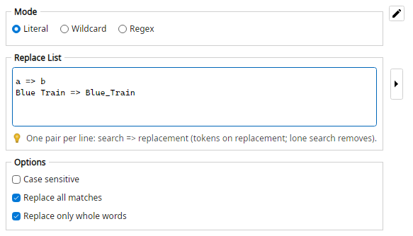

Applies several search/replace pairs in order, sharing one match mode and flags. Each replacement may include formatter tokens such as <counter:…>.
Entries (literal):
a => b
. => _
a.a >>> b_b
Entries (regular expression; second item in the Rename List):
a => b
\. => _
[0-9]+ => <counter:initial=10,step=1,padding=none,length=2,resetScope=global>
01.-.Blue.Train >>> 10_-_Blue_Trbin